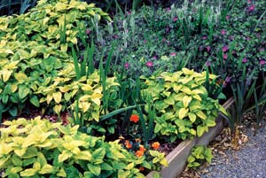

Lemon balm, the International Herb Association’s 2007 Herb of the Year, is an ancient antidote to modern-day stress. This versatile herb can be used to calm nerves, promote restful sleep, and reduce digestive distress - plus it could be your new best friend in the great outdoors. Not only do its leaves have a rich, zippy, lemon smell, but they also contain compounds that can repel mosquitoes.
“Some northern European forms of lemon balm are high in citronellal, a compound which mimics the well-known herbal repellent citronella oil,” says Arthur Tucker, an ethnobotanist at Delaware State University. He notes that some forms of lemon balm (Melissa officinalis) are nearly 38 percent citronellal. A variety called ‘Quedlinburger Niederliegende’ with this higher content of essential oil is available from Johnny’s Selected Seeds and Richters.
For a quick mosquito repellent, simply crush a handful of lemon balm leaves in your hand and rub them on your exposed skin. Grow the plants near your backdoor or in your garden, where the leaves will be handy when you need them.
In addition to keeping biting bugs at bay, lemon balm has a long history of medicinal use. Cultivated in the Mediterranean region for the past 2,000 years, this perennial herb was prized for its catchall curative properties. During the Middle Ages, King Charles V of France was said to drink lemon balm tea daily for his health. Paracelsus, a Swiss Renaissance physician, called lemon balm the “elixir of life.” And in the 17th century, the French Carmelite nuns made their famous Carmelite Water with lemon balm and other herbs to treat nervous headaches and neuralgia. Today, lemon balm is gaining acceptance as a useful herb for modern stress-related maladies.
“Weedy lemon balm, which any old brown thumb can grow, would be one of the herbs you should try before resorting to pharmaceuticals,” says James Duke, an internationally renowned herbal expert. “It’s cheap, easy, efficacious, pleasing and safe; and it makes a good tea. Lemon balm is about as safe and pleasant an herb as there is.”
Duke thinks lemon balm could compete favorably with drugs such as Ambien for insomnia, Avirax for oral herpes, Zoloft for depression and Zantac for indigestion. The German Commission E, established by the country’s Minister of Health in the ’70s to review herbal remedies, has approved lemon balm for gastrointestinal problems, as well as nervous sleeping disorders.
Lemon balm is frequently used in combination with other medicinal herbs. Though studies of these are limited, lemon balm has been tested alone, or with other herbs for the following:
Anxiety. Two studies conducted at the University of Northumbria in England found that a standardized lemon balm extract improved participants’ moods, with no decrease in mental alertness at certain dosage levels. “The results suggest that low doses of lemon balm may enhance calmness and high doses may have a mild sedative effect,” writes Christina Chase for the American Botanical Council.
Cold Sores. Topical applications of lemon balm have proven effective at treating cold sores (oral herpes). A study published in the journal Phytomedicine found that a cream made with lemon balm extract reduced the number of blisters in an outbreak, if used early. Celeste Robb-Nicholson, editor in chief of Harvard Women’s Health Watch, writes: “A safe long-term treatment [for cold sores] is topical application of lemon balm. It doesn’t prevent cold sores, but it appears to speed healing.”
While lemon balm creams may be hard to find in the United States, Tucker recommends making a cream formulated with 1 percent dried lemon balm. (For detailed advice on making herbal products, try Richo Cech’s Making Plant Medicine, Horizon Herbs, 2000.)
Sleep. A Swiss study published in the journal Fitoterapia showed that a combination of lemon balm and valerian root improved sleep quality as compared to a placebo group. Another study published in Phytotherapy Research found that the lemon balm/valerian combination reduced anxiety among healthy participants who were subjected to laboratory-induced stress.
Indigestion. Lemon balm is recommended by herbalists for digestive disorders, especially anxiety-related dyspepsia, since its antispasmodic properties are thought to calm indigestion. A German study examined 120 patients with functional dyspepsia who were given a preparation containing lemon balm as the main ingredient. After eight weeks, 43 percent of participants on active treatment reported complete relief from their symptoms.
Other than the possibility of an allergic reaction, lemon balm has few side effects. The U.S. Food and Drug Administration classifies it as “generally recognized as safe.” The German Commission E recommends a dosage of 150 to 450 milligrams of the herb per cup of tea, taken daily as needed. However, if you are pregnant or nursing, avoid taking the herb in large quantities. Lemon balm may also interfere with thyroid hormones, so speak to your doctor before taking lemon balm if you take thyroid medication.
There are numerous ways to enjoy lemon balm, whether you add it to tea, use it as a cooking herb, purchase supplements or tinctures from the health food store, or simply enjoy its aromatherapeutic qualities in a relaxing bath.
“Since many of the effective compounds will pass through the skin, you can have your tea, drink it too, and bathe in it,” Duke says. To make lemon balm tea, add a handful of lemon balm leaves to 1 cup of water and steep for at least five minutes. For a soothing lemon balm bath, put some fresh (or dried) crushed lemon balm leaves into a muslin bag, then let the warm water run through it as you fill the tub.
Lemon balm also adds a light lemon flavor to a variety of culinary dishes, such as salads, pasta, fish, chicken, sauces and marinades. Since the leaves lose flavor when dried, add fresh leaves to your dish near the end of the cooking process. Look for fresh lemon balm at your local farmers market if you prefer not to grow it yourself.
Lemon balm is easy to grow from seed, rooted cuttings or by root division. The herb thrives in full sun, but can be grown in partial shade. Varieties ‘All Gold’ and ‘Aurea’ have variegated and yellow foliage, and need some shade because they tend to burn when exposed to full hot sun. They are not as hardy or as flavorful as the common green Melissa officinalis, or the high-citronellal variety, ‘Quedlinburger Niederliegende.’
Lemon balm looks and grows much like mint-it is a member of the mint family-though it does not send runners. It will compete for garden space and is best planted next to other vigorous perennials that will hold their own against this sweet yet somewhat invasive herb. The plants grow from 2 to 2½ feet tall, bushing out laterally, so give each plant about 2 feet of space all around. Prune plants a few times during the growing season to help maintain new growth. If they become too dense and thick, thin by yanking out some of the inner stems. The hardy root system will survive the coldest winters if plants are well mulched.
- Susan Belsinger
|
 JERRY PAVIA The ‘All Gold’ lemon balm variety has lovely yellow leaves. |
MATTHEW T. STALLBAUMER Add zip to dishes, such as corn fritters, with lemon balm pesto. (For the recipe, visit www.HerbCompanion.com.) |
|